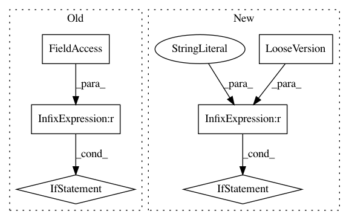

1f60373d28c427a2a05c9ea26231c717772066dc,setup.py,,,#,12
Before Change
)
if __name__ == "__main__":
setup(**setup_options)
After Change
// Added support for environment markers in install_requires.
if LooseVersion(setuptools.__version__) < "36.2":
raise ImportError("setuptools>=36.2 is required")
class build_ext(build_ext, object):
def finalize_options(self):
// The key point: here, Cython and numpy will have been installed by
In pattern: SUPERPATTERN
Frequency: 3
Non-data size: 6
Instances
Project Name: hmmlearn/hmmlearn
Commit Name: 1f60373d28c427a2a05c9ea26231c717772066dc
Time: 2018-10-22
Author: anntzer.lee@gmail.com
File Name: setup.py
Class Name:
Method Name:
Project Name: nipy/dipy
Commit Name: 3d8011f9ce1dba31df7c83f07dcf481a65926aa4
Time: 2014-11-21
Author: garyfallidis@gmail.com
File Name: dipy/core/optimize.py
Class Name:
Method Name:
Project Name: nipy/dipy
Commit Name: 419b97c0e7c1c013c6b5bef52ae2e81a2753547c
Time: 2014-11-14
Author: garyfallidis@gmail.com
File Name: dipy/core/optimize.py
Class Name:
Method Name: